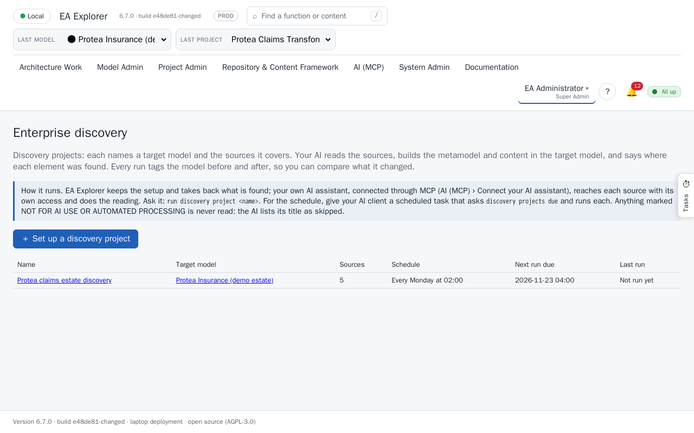

Add a source to a discovery project
For: Model Admin, System Admin
A place the AI reads: a folder, a site, a mailbox; what to include.

#/discovery-projectsWhy do this
Much of what an organisation knows about itself sits in documents, sites and folders. A discovery source tells the AI where one of them is and what to include, so each run reads it and proposes what it finds for review. Documents marked NOT FOR AI USE OR AUTOMATED PROCESSING are never read. See AI in EA Explorer.
Using AI in EA Explorer is always your assistant working with your rights: it reads and drafts, you review and commit. Used well, it takes the slow parts of architecture work (searching, cross-checking, first drafts) so you spend your time on judgement.
In TOGAF terms: Outside the standard's method, but in service of it: AI speeds up gathering content (phases B to D), analysis (E) and reporting to stakeholders, with people reviewing every change. See EA Explorer and the TOGAF Standard.
The goal: The AI knows one more place to read when it discovers the enterprise.
Before you start You need the Discovery Admin role.
Steps
- Open the discovery project; Add a source.
- Its kind, where it is, what to include, whether attachments are read.
- Test the link; Save. Documents marked NOT FOR AI are read by title only.